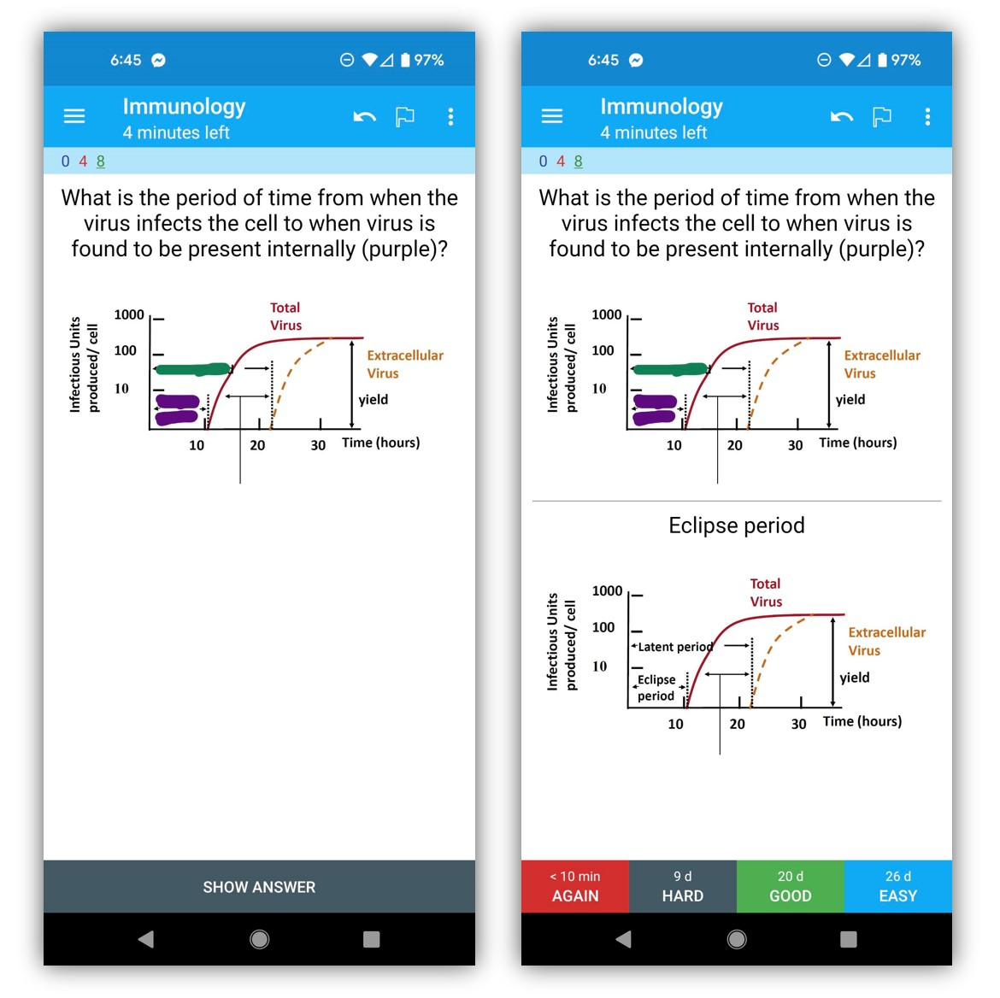
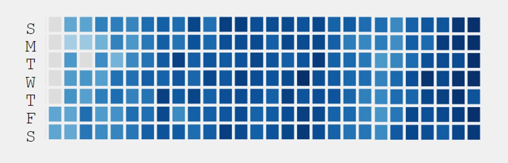
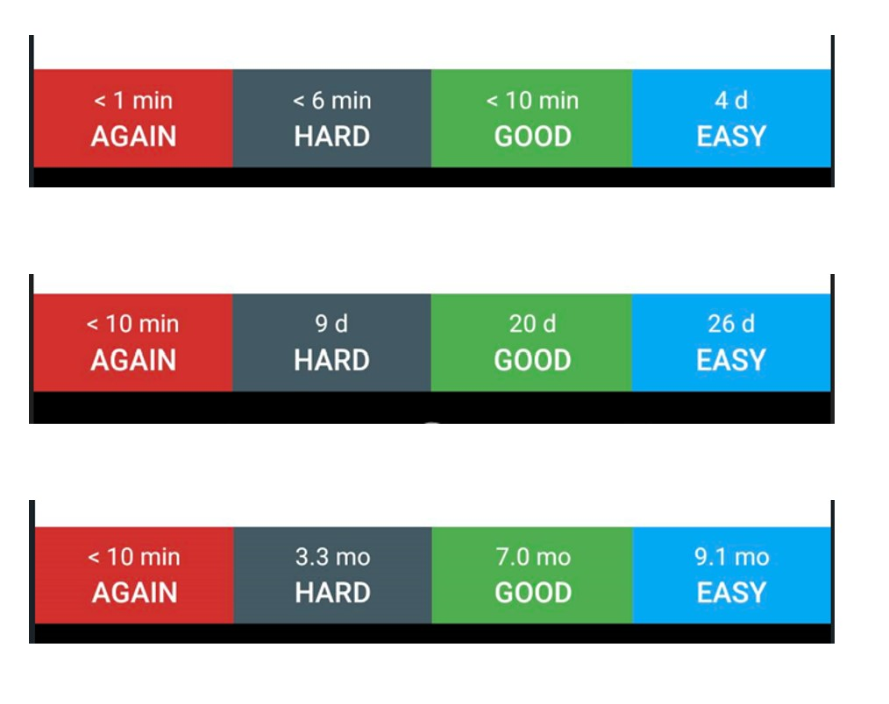
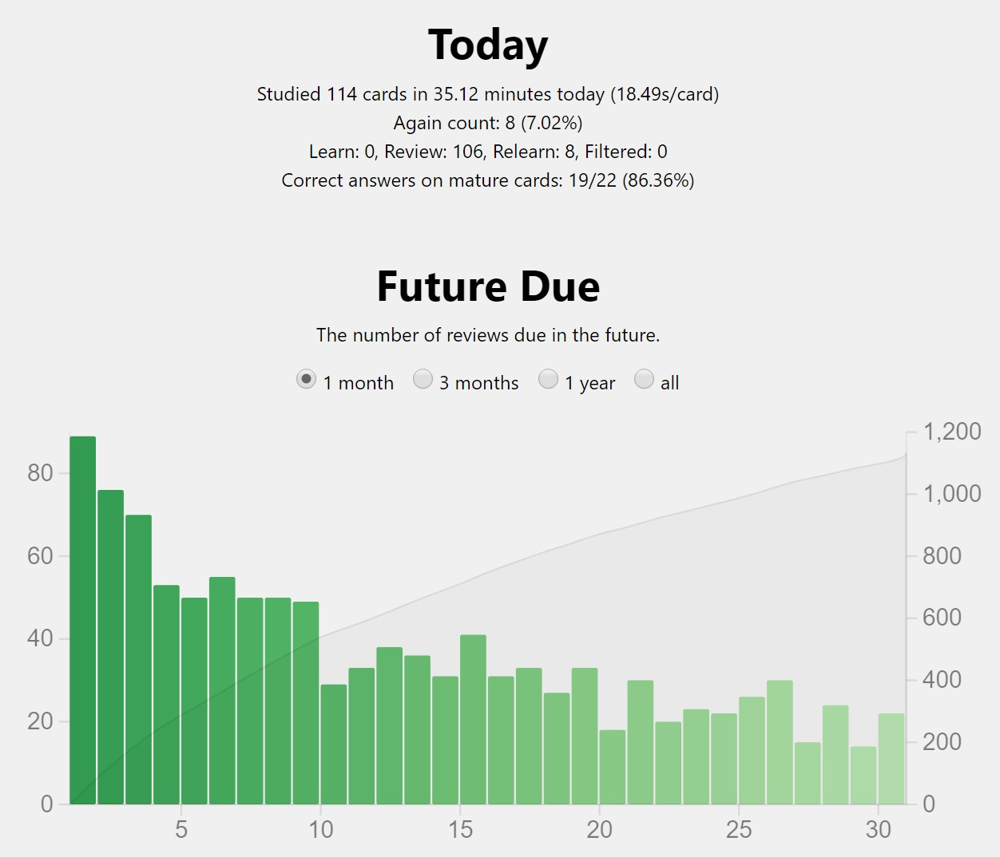

Anki is a learning superpower
I have been using Anki flashcards to help me study. Anki is a free, open-source system based on the research of spaced repetition learning. I have been using this technique to study immunology, but it can be used for any subject. You make your own cards and they can include anything you like. Anki is an app available on Android, iPhone, and desktop, and it is easy to sync between your phone and computer (it is free on Android and desktop, although costs money for the iPhone). I want to explain the basics of the approach. This post is intended for people new to Anki– I will not cover power user features.

Over 6 months ago, I began studying immunology every day. Every immunology professor I’ve watched lectures from has said that learning immunology is like learning a foreign language and that the amount of specialised jargon is intense. At first, I pulled out a notebook to write down what I wanted to remember. However, I soon decided to try out Anki flashcards instead.
Spaced Repetition Learning
In order to retain information, research shows that the best time to be quizzed about something you are learning is right before you otherwise would have forgotten it. For new information, this will be relatively soon. However, as you study a piece of information more times, you can go longer and longer before you need to be prompted about it. The other key factor in when you need to see a card again is how difficult a question is for you. If you find it easy, you can wait longer before you need to see it again, but if it’s hard, you should review it sooner. And if you got it wrong or didn’t know the answer, you should study it again in the same session. Anki handles the spacing of cards for you, keeping track of when you need to see each card again.

You create the cards. You can write with text, include images, and/or use a fill-in-the-blank format (called cloze). I usually make flashcards as I watch video lectures, pausing the video to screenshot images I want to use or to transcribe key points I want to remember. I make cards on my laptop as I watch videos and then study on my phone.
Again, Hard, Good, Easy
On the back of each card, at the bottom, Anki offers you 4 choices to rate whether you need to see the card again (choose this if you got it wrong) or whether you found it hard, good, or easy. For a new card, all the choices will lead to reviewing again soon, with “easy” corresponding to 4 days. However, over time, the choices for all options get longer as you answer the card correctly more times (except for “again”, which indicates you forgot and need to restart that card). This shows the options Anki gives on 3 different cards: a brand new one, one I’ve seen a few times, and one I’ve gotten correct many times (and likely won’t need to see again for many months).

If you get a card wrong/need to see it again, Anki will reset to showing you the card with higher frequency again. Here is an old card that I missed. After I select “Again” (because I forgot an answer), these were the options the next time I see that card:
Sustainable over time
Since you will see older cards less and less often (assuming you are getting them mostly correct), the number of Anki cards you need to do each day will decline with time if you don’t add more cards. This makes Anki feel very sustainable to pick up, and I have found a rhythm around how many new cards I can add each day, while keeping the time I spend on Anki relatively constant. It is reassuring to know that as long as I keep up on my daily cards, I will be able to retain the information I am learning.
For instance, I can look at my stats on Anki and see that today I did 114 cards, but for each day going forward I will have less and less (this graph doesn’t take into account that I plan to continue adding new cards each day).

For all ages and all subjects
My daughter is currently taking Biochemistry Literacy for Kids, a biochem course aimed at elementary aged children. The teacher suggested that the kids should memorise the 20 basic amino acids. While my daughter was initially unsure if she’d be able to do it, she had fun making up silly stories about each one (based on their structure and name), only spends a few minutes on Anki each day, and now has a strong sense of pride that she knows the amino acids (and her parents don’t).
My partner Jeremy used Anki to study Chinese characters. After 6 months of study, when he went to Beijing to attend an in-person Chinese school, he tested into a class where the other students had years of practice.
Combining with other techniques
Anki can (and should) be combined with other memory techniques, such as creating short stories that are funny, surprising, sexy, violent, unexpected, or related to family, friends, and celebrities (all these are attributes proven to make things more memorable).
Other Resources on Effective Learning and Memory
Many people incorrectly believe that memory is purely a fixed talent that you either have or you don’t, but there are a number of techniques proven to help make both memory and learning more effective. For more on how to learn effectively, here are several books, videos, and courses:
- Moonwalking with Einstein: The Art and Science of Remembering Everything, by Joshua Foer
- Remember, Remember, by world memory champion Ed Cooke
- A Mind For Numbers: How to Excel at Math and Science (Even If You Flunked Algebra), by Barbara Oakley
- Jeremy Howard’s talk on techniques for learning Chinese
- Coursera class on Learning How to Learn, taught by Barbara Oakley. This is one of the most popular Coursera courses of all time.
- There’s no such thing as not a math person: my post about learning math and myths of innate ability